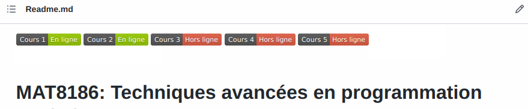
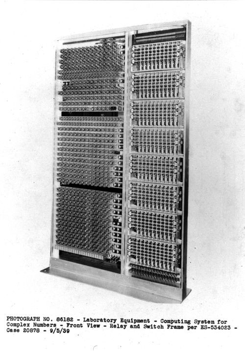
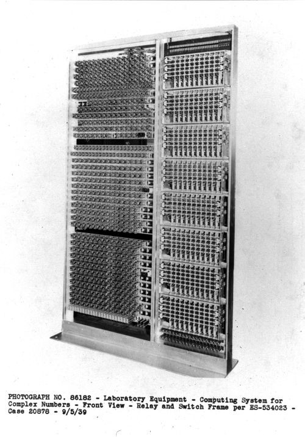

Cours 1 — Introduction
Patrick Fournier
MAT8186 — Techniques avancées en programmation statistiques R
Automne 2022
Horaire et locaux
- Local
- PKS1545
- Horaire
- de 10h à 12h
- Lundi
- 12, 19 et 26 septembre, 3 octobre
- Jeudi
- 8, 15, 22 et 29 septembre
Logiciels
Ressources
- GitHub du cours
- Slides 
- Externes
Documents administratifs
Deux documents importants:J'ai besoin de 2 témoins pour confirmer l'entente d'évaluation.
(N'oubliez pas de joindre l'entente (point 2🠕🠕) à votre message 😉).
Un peu d'histoire
Bell Labs
- Fondé en 1925 par AT&T
- 9 prix Nobels & 4 prix Turing
- Mecque du développement technologique au 20e siècle
 


S
- Inventé par John Chambers au sein des Bell Labs
- Développé pour la programmation statistique
- Objectif: “To turn ideas into software, quickly and faithfully”
Concepts de base 🤓
Niveaux de langage
- Compromis entre convivialité et performance
- Facile pour nous vs Facile pour l'ordinateur
machine ⮕ assembleur ⮕ bas niveau ⮕ haut niveau
Examples:
- Assembleur
- ARM, x86, MIPS
- Bas niveau
- C, Pascal, ALGOL
- Haut niveau
- R, Python, C++, Java
Exemple: Calcul d'un nombre de Fibonacci sur x86 (source):
8B542408 83FA0077 06B80000
0000C383 FA027706 B8010000
00C353BB 01000000 B9010000
008D0419 83FA0376 078BD989
C14AEBF1 5BC3
Exemple: Calcul de la suite de Fibonacci en assembleur x86-64 (en partie, source):
xor %edx, %edx
mov $10, %ebx
div %ebx
addb $48, %dl
movb %dl, (%esp, %ecx, 1)
dec %ecx
cmp $0, %ax
je .done_pl
jmp .loop_pl
Exemple: Calcul de la suite de Fibonacci en Haskell:
fib :: Integer -> Integer
fib 0 = 0
fib 1 = 1
fib n = fib (n - 1) + fib (n - 2)
Compilation vs interprétation
- Ordinateur exécute uniquement du code machine
- Tout autre langage doit être «traduit»: compilation
- Autre possibilité: faire exécuter le code par un logiciel auxiliaire
R est un tel logiciel auxiliaire!
Paradigmes
- Manière de formuler une solution à un problème dans un langage de programmation
- R est multiparadigme
- Impératif
- Fonctionnel
- Réflectif
- Orienté objet
- Array programming
R en bref
R est:- Un langage de haut niveau
- Un langage interprété
- Un langage multiparadigme
- Une implémentation de S
Git et GitHub 😱
- Git: système de gestion des versions
- Git \( \neq \) GitHub
- Glosaire et commandes importantes
Dépôt Git
- “Repository”, “repo”
- Conteneur pour un ensemble de fichiers, par exemple
- Répertoire local
- Dépôt GitHub
- Clône \( := \) copie d'un dépôt
- Cas typique
- Un dépôt sur GitHub
- Un clône local
Workflow typique
- Mettre à jour le dépôt local:
git pull - Modifier le dépôt local 💻
- Commettre les modifications:
git commit - Rincer et répéter 🚿
- Envoyer les modifications commises vers GitHub:
git push

Patrick Fournier (Université du Québec à Montréal) MAT8186 Automne 2022